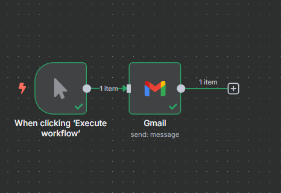
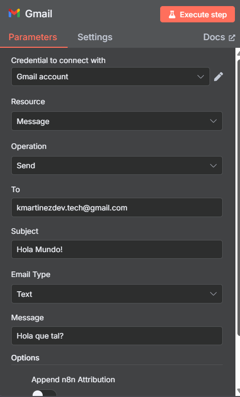
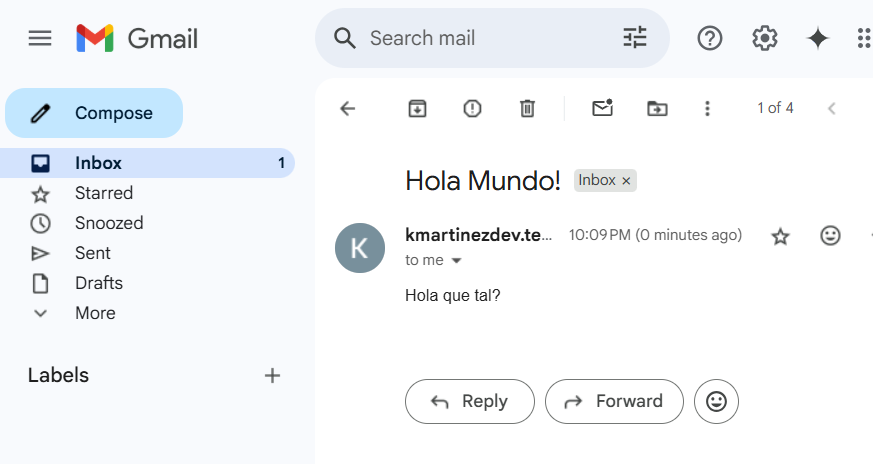
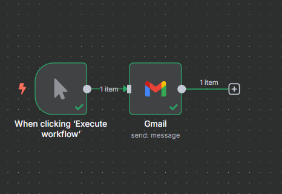
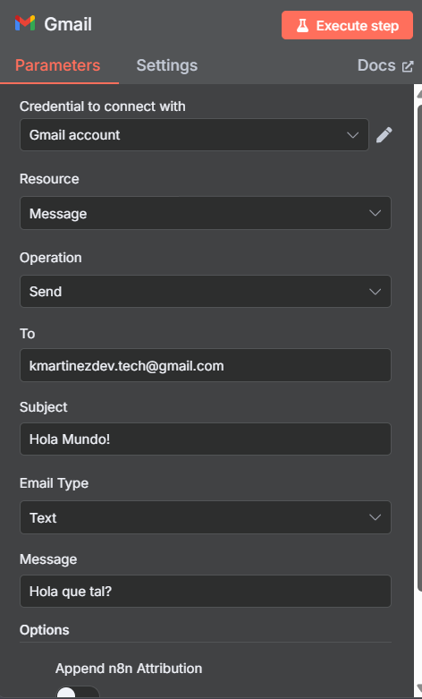
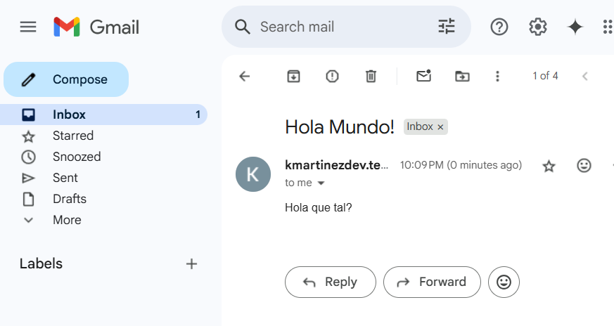
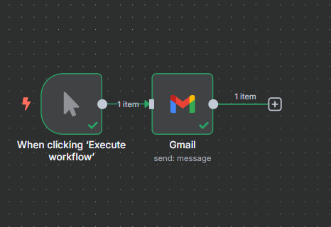
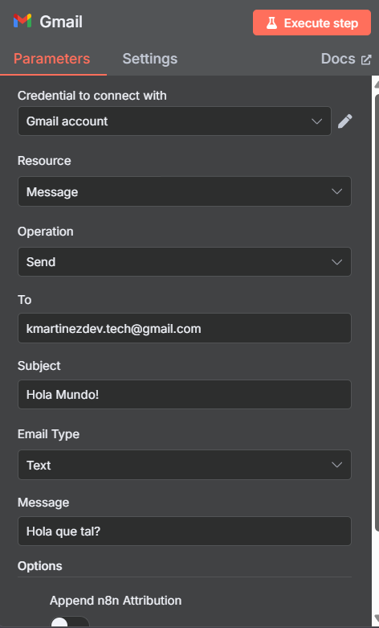
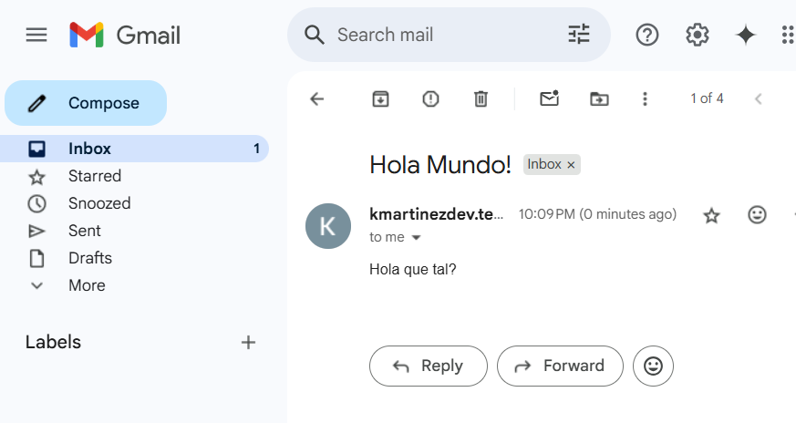

Mi primer flujo en n8n – Envío de correo con Gmail
Primer paso en mi recorrido aprendiendo automatizaciones con n8n
📘 Introducción
En este experimento inicial con n8n creé un flujo sencillo que envía un correo por Gmail. Este ejercicio me permitió familiarizarme con la interfaz, entender qué son los triggers y probar la conexión con una cuenta de correo. Es el primer escalón de mi camino en la automatización de tareas con n8n.
🛠️ Paso a paso
🔐 Registro y acceso: Me registré en n8n con la prueba gratuita de 14 días y accedí a mi primer "workflow".
⚡ Exploración del espacio de trabajo: Estudié qué son los triggers (desencadenadores) y me familiaricé con las herramientas del editor.
▶️ Configuración del trigger: Añadí el nodo “When clicking 'Execute workflow'” para disparar manualmente el flujo.
📧 Acción Gmail: Agregué un nodo de la app Gmail con la operación "Send Message".
✏️ Relleno de parámetros: En el nodo Gmail configuré:
• To: tu correo de destino
• Subject: asunto del mensaje
• Message: cuerpo del texto
• Además enlacé mi cuenta de Gmail como credencial.
🚀 Ejecutar y verificar: Hice clic en "Execute workflow" y confirmé en mi bandeja de entrada que el correo llegó correctamente.
📸 Capturas del proceso



🧠 Aprendizajes
Comprendí la utilidad de los triggers para iniciar flujos.
Aprendí a conectar una credencial Gmail y enviar correos.
Me familiaricé con el editor drag-and-drop de n8n.
Siento la motivación de expandir este flujo: añadir condicionales y otros servicios.
Este flujo es solo el comienzo. Los siguientes pasos incluyen integrar formularios web, conectar APIs externas y diseñar automatizaciones más complejas.
 




